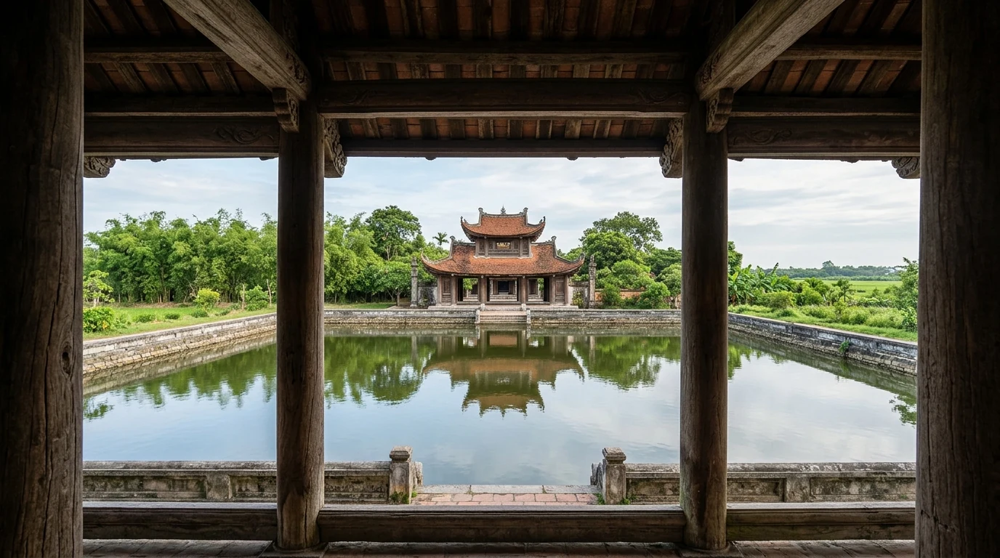

🧭 1. Tổng Quan Chùa Keo — Đỉnh Cao Kiến Trúc Gỗ Cổ Đại Việt
Tiền thân của chùa là Nghiêm Quang Tự do Quốc sư – Thiền sư Dương Không Lộ (1016–1094) dựng năm 1061 dưới triều vua Lý Thánh Tông bên ven sông Hồng (vùng Giao Thủy xưa), sau đổi tên thành Thần Quang Tự. Năm Tân Hợi 1611, trận đại hồng thủy sông Hồng làm sạt lở nền chùa cổ; cư dân dời sang lập hai làng Dũng Nhuệ (Keo Trên / Keo Hành Thiện) và Huống Phúc – Duy Nhất (Keo Dưới). Năm 1630, Quận công Hoàng Nhân Dũng cùng phu nhân Lại Thị Ngọc Lễ vận động thập phương công đức gỗ lim, giao Cường Dũng hầu Nguyễn Văn Trụ làm tổng công trình sư huy động 42 hiệp thợ giỏi thi công ròng rã 28 tháng, hoàn thành vào tháng 11 năm Nhâm Thân 1632.
Trên khuôn viên rộng khoảng 58.000 m² bốn bề hồ nước bao bọc, quần thể hiện còn bảo tồn 17 công trình với 128 gian gỗ lim theo bố cục Nội công ngoại quốc: phía trước thờ Phật (Ông Hộ, Ống Muống, Phật Điện), phía sau thờ Thánh Dương Không Lộ (Giá Roi, Thiêu Hương, Phụ Quốc, Thượng Điện) và kết thúc bằng tuyệt tác Gác chuông gỗ 3 tầng cao 11,04 m dựng trên nền gạch đá với hệ thống con sơn – đấu củng ghép mộng tinh vi không dùng đinh sắt. Di tích được xếp hạng Di tích Quốc gia đặc biệt (QĐ 1419/QĐ-TTg ngày 27/9/2012), sở hữu 2 Bảo vật Quốc gia (Bộ cánh cửa chạm rồng năm 2017 và Hương án Chùa Keo năm 2021), đồng thời kết nối cùng không gian làng dệt đũi Nam Cao và nghề bánh cáy cổ truyền vùng Kiến Xương – Đông Hưng lân cận.
📜 2. Nghi Thức Hành Lễ Tiền Phật Hậu Thánh & Phòng Cháy Di Sản Gỗ
Toàn bộ 17 công trình 128 gian của Chùa Keo được kiến tạo hoàn toàn từ gỗ lim gần 400 năm tuổi. Giữ gìn an toàn phòng cháy và tôn trọng thứ tự lễ bái cổ truyền là nguyên tắc tối thượng:
🏮 3 Quy Chuẩn Cốt Lõi Khi Chiêm Bái Chùa Keo
🔥 Tuyệt Đối Không Mang Lửa Vào Nhà Gỗ
Chỉ thắp 1 nén hương tại lư đồng lớn ngoài sân gạch. Nghiêm cấm mang hương đang cháy, bật lửa hay nến sáp vào các tòa gỗ lim, khu Đền Thánh và chân Gác chuông.
🙏 Đúng Thứ Tự Tiền Phật — Hậu Thánh
Đi vào qua cửa bên Tam Quan, thành kính lễ Tam Bảo tại cụm Phật Điện phía trước rồi mới men theo hành lang sang đảnh lễ Quốc sư Dương Không Lộ tại cụm Đền Thánh phía sau.
🏛️ Lễ Chay Tinh Khiết & Giữ Gìn Chạm Khắc Cổ
Cả ban Phật và ban Thánh Không Lộ tại Chùa Keo đều dâng lễ chay thanh tịnh (hoa tươi, oản đường, bánh cáy, chè lam, trầu cau); không chạm tay lên Hương án Bảo vật Quốc gia và cửa chạm rồng.
⛩️ 3. Lộ Trình 6 Trạm Cổ Tự Gỗ Lim & Chánh Niệm
Lộ trình 6 trạm dẫn bước dọc trục thần đạo Bắc – Nam xuyên suốt quần thể Nội công ngoại quốc từ hồ nước Tam Quan Ngoại đến Gác Chuông 3 tầng và Giếng cổ 36 cối đá.
Hành Trình Thiền Hành Thần Quang Tự 400 Năm
Từng bước đi qua trục kiến trúc gỗ lim thời Lê Trung Hưng, chiêm bái Bảo vật Quốc gia và lắng nghe tiếng chuông đồng hòa tiếng khánh đá ngân vang.

Mở đầu trục thần đạo là tòa Tam Quan Ngoại dựng bằng những hàng cột gỗ lim sừng sững, mở tầm nhìn băng qua hồ nước hình chữ nhật phẳng lặng như gương trước khi tới Tam Quan Nội. Ba mặt Đông – Tây – Nam của chùa đều có hồ rộng bao quanh vừa tạo cảnh quan thanh tịnh, vừa là nguồn nước phòng hỏa cổ truyền đầy trí tuệ của tiền nhân.
🚪 Quy Tắc Lối Đi Qua Tam Quan
- Đi vào bằng lối bên phải (Giả quan) hoặc bên trái (Không quan), tránh đi thẳng chính giữa trục trung tâm và không dẫm lên ngưỡng gỗ.
- Dạo chậm ven bờ hồ gạch để cảm nhận làn gió mát rượi thổi từ cánh đồng lúa vào sân chùa.
- Giữ gìn vệ sinh mặt hồ, không ném thức ăn hay tiền xu xuống nước.
💧 Trí Tuệ Quy Hoạch Thủy Cảnh Thế Kỷ XVII
- Đất đào hồ xưa được đắp cao làm nền móng vững chãi cho 17 tòa kiến trúc gỗ tránh ngập úng mùa lũ sông Hồng.
- Hồ nước điều hòa vi khí hậu mát mẻ quanh năm bảo vệ thớ gỗ lim không bị nứt nẻ.
- Nơi diễn ra nghi thức bơi trải truyền thống sôi nổi mỗi dịp Hội Thu tháng Chín.
CHỨNG NHẬN CHIÊM BÁI THẦN QUANG TỰ — CHÙA KEO VIÊN MÃN
Chúc mừng bạn đã hoàn thành trọn vẹn lộ trình 6 trạm chiêm bái Di tích Quốc gia đặc biệt Chùa Keo (Thần Quang Tự). Nguyện cầu mười phương Chư Phật và Đức Thánh Tổ Dương Không Lộ gia hộ gia đạo bình an, trí sáng tâm trong, phúc lộc trường tồn.
🧭 4. Lịch Trình Chiêm Bái Chùa Keo & Làng Nghề 1 Ngày
Gợi ý hành trình 1 ngày xuất phát từ Hà Nội (~110km) khám phá trọn vẹn Chùa Keo cùng các làng nghề thủ công trứ danh ven sông Hồng – sông Trà Lý:
Buổi Sáng (06h30 – 11h15): Hành Hương Trục Thần Đạo Chùa Keo (Thần Quang Tự)
- 06h30: Khởi hành từ Hà Nội theo cao tốc Pháp Vân – Cầu Giẽ – Liêm Tuyền xuôi về xã Vũ Tiên, Hưng Yên.
- 08h30: Chiêm bái tuần tự 6 trạm Chùa Keo: Tam Quan Ngoại soi bóng hồ sen, bộ cánh cửa chạm rồng tại Tam Quan Nội, lễ Phật bên Hương án Bảo vật Quốc gia, đảnh lễ Đức Thánh Không Lộ và ngắm cận cảnh 84 bộ đấu củng Gác chuông gỗ 11,04m.
Buổi Trưa (11h30 – 13h30): Cơm Chay Đồng Bằng & Thưởng Trà Bánh Cáy
Thưởng thức mâm cơm chay thanh đạm mang hương vị đồng chiêm (canh nấm hạt sen, đậu phụ rán sả, rau củ luộc chấm tương Bần), nhấp chén trà sen nóng cùng lát bánh cáy cổ truyền dẻo bùi vị gừng, lạc, vừng rang.
Buổi Chiều (14h00 – 17h00): Làng Dệt Đũi Nam Cao & Làng Vườn Bách Thuận
- 14h00: Ghé thăm làng nghề dệt đũi cổ truyền Nam Cao (Di sản văn hóa phi vật thể Quốc gia) gần đó để tận mắt xem các bà, các mẹ kéo tơ tằm thủ công trên khung cửi gỗ.
- 15h30: Dạo bước giữa những nếp nhà cổ và cây cảnh xanh mướt của làng vườn Bách Thuận ven sông Hồng trước khi khởi hành về lại Hà Nội.